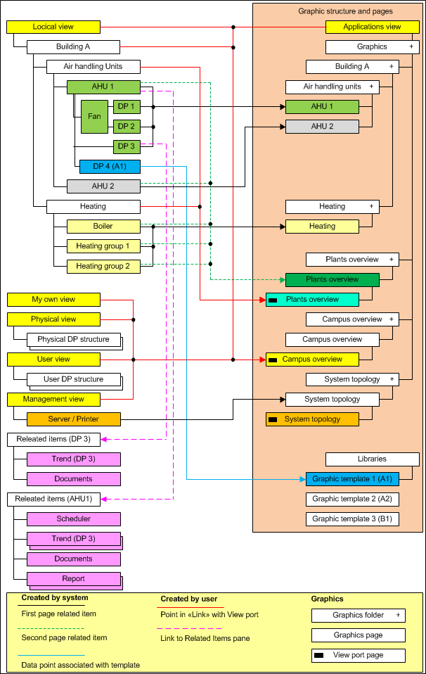

Navigation Concept
Desigo CC permits a range of navigation and operating workflows via various views in System Browser. Although graphics pages are saved in the Application View, the Logical View is best for the Desigo management platform to open the corresponding graphics pages. All BACnet objects are displayed in a structured manner in the Logical View without additional engineering. You can navigate by selecting an object in System Browser from:
- Graphics page (ventilation, heating, refrigeration plants, etc.)
- Graphic templates (heating curve, controller, room application, etc.)
- Text view (object properties)
Graphics Page
Each data point referenced on a graphics page can be selected for navigation in System Browser. Selecting such a data point:
- Opens the graphics page
- Displays the selected object with a red rectangle on the graphics page
- Displays object properties in Operation or Extended Operation tabs.
Graphic Template
Each data point referenced in the library with a Graphic Template can be selected for navigation in System Browser. Selecting such a data point:
- Opens the Graphic Template
- Displays object properties in Operation or Extended Operation tabs.
Text
This is the default display in the event no graphic reference or Graphic Template is assigned to the object. Properties are operated in Operation or Extended Operation tabs.
Single-Click Navigation
Consistent single-click operation was achieved by consequently adhering to the navigation concept. The graphics page opens in Desigo CC by selecting an object in System Browser. Depending on the object type, this is done automatically by the system or has to be engineered. The following diagram displays the concept on how related items to the graphics pages are set up in the Logical View.

Start Page
A link from all views must be engineered (for example, Logical View, Management View) in order to query the Start page from all views. It must be resolved using a Viewport page since it cannot occur directly on the created graphics page.
System Topology
The System Topology is displayed in the Management View if the server, network, or automation station is selected. A hierarchy object must be created in the Logical View for the System Topology to be displayed without switching views.
Plant Overview
A graphics page and Viewport page must be created for the Plant Overview page.
- The graphics page opens if a referenced data point is selected (for example, plant switch ventilation, heating).
- The viewport page opens if an object is selected without a data point reference (hierarchy object ventilation, heating).
Plant Graphic
The plant graphic opens by selecting referenced data points (for example, fan, feedback fan).
Floor Plan
The Floor Plan opens by selecting referenced data points (for example, fan, feedback fan).
Viewport
The Viewport is always used if more than one link without a data point reference is required to open a graphics page (for example, Start page).
If only one hierarchy object is available in System Browser (for example, Building A) without a data point reference to the graphics page, then the hierarchy object can also serve as a link.

NOTE:
In case, the Viewport page is a copy of the graphics page. The Viewport page must also be re-saved when making changes to the graphics page.
Graphic Template
The Graphic Template opens by selecting referenced data points (for example, PID controller). This related item is already created during library creation and does not require additional engineering.
Related items
Additional related items can be added to the Operation or Extended operation tabs (documents, scheduler, trend, reports, and so on). This allows the user to easily access more detailed information.